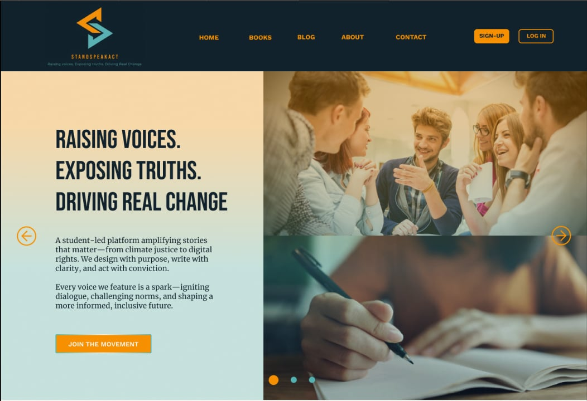
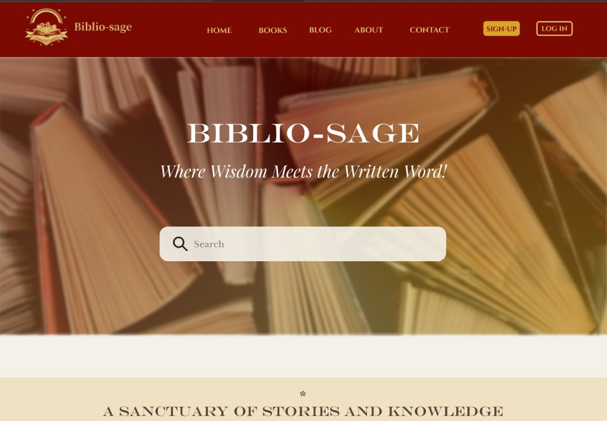
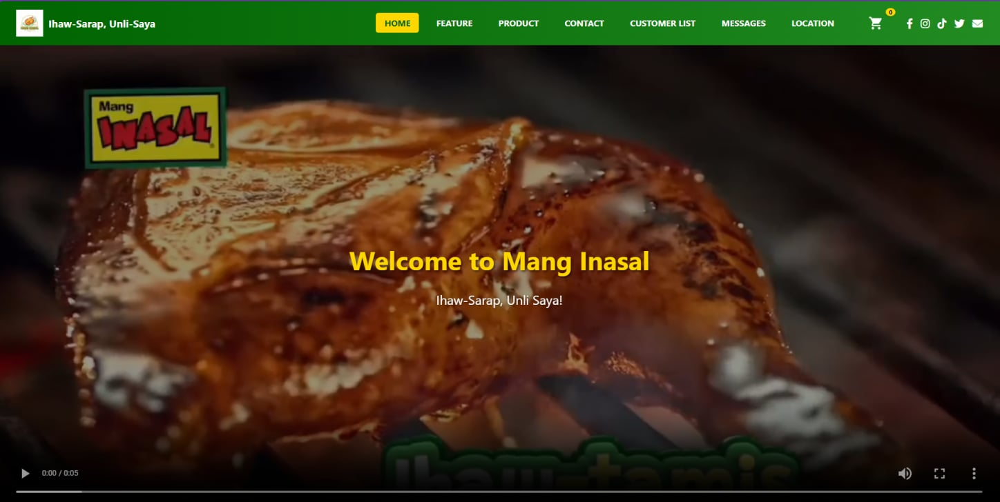

Projects
You will find my academic works here. Click "View More" to explore the details of each work.

StandSpeakAct: Educational Blog Platform for Social Advocacy
StandSpeakAct, a socially driven educational blog platform that promotes awareness on important global issues.
View More
Biblio-Sage: Where Wisdom Meets the Written Word!
Biblio-Sage, a minimalist e-library platform that offers an organized and user-friendly space for exploring books and written content focused on learning and wisdom.
View More
Mang Inasal
Mang Inasal, a restaurant website concept that highlights products, features, and locations using a clean navigation system and eye-catching visuals.
View More
Cuisinang Capampangan: Manyaman!
Cuisinang Capampangan: Manyaman!, a cultural food website that showcases traditional Kapampangan dishes and highlights Pampanga's rich culinary heritage.
View More